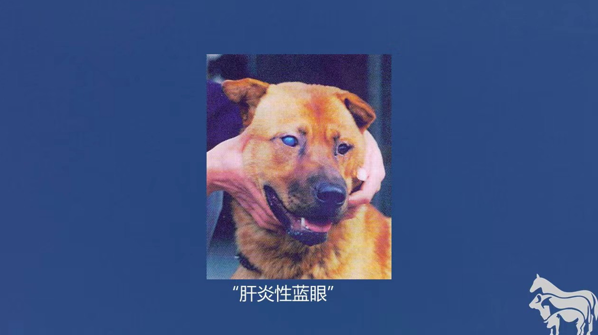
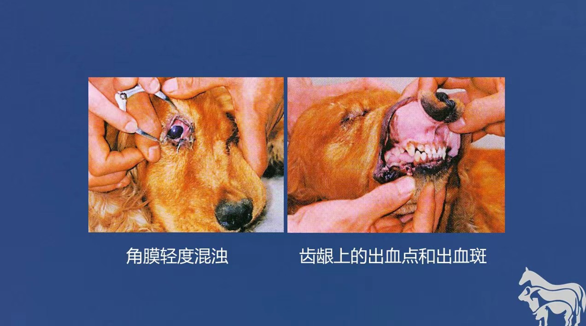

病原：犬腺病毒1型，属于腺病毒科的哺乳动物腺毒病属，，病毒粒子呈圆形，无囊膜，并为二十面体对称，基因组为双股线状DNA 流行病学：本病遍布世界各地，不仅可感染家养的犬，狐，而且广泛流行于野生狐，熊，狼，郊狼和浣熊等动物，一年四季均有发生各种性别，年龄和品种的犬活，对本病均易感，主要经消化道传染，病犬和带病毒的犬，通过眼泪，唾液，粪尿等分泌物和排泄物排出病毒污染周围环境饲料和用具等 症状：本病的潜伏期较短，自然感染6～9天，经消化道感染的病毒首先在扁桃体进行初步增殖，接着很快进入血流，引起体温升高等病毒血症，然后定位于特别嗜好的肝细胞和肾，脑，眼等全身小血管内皮细胞，引起急性实质性肝炎，间质性肾炎，非化脓性脑炎和眼色素层炎等炎性症状 |
实例症状 |
|  | |
|  |